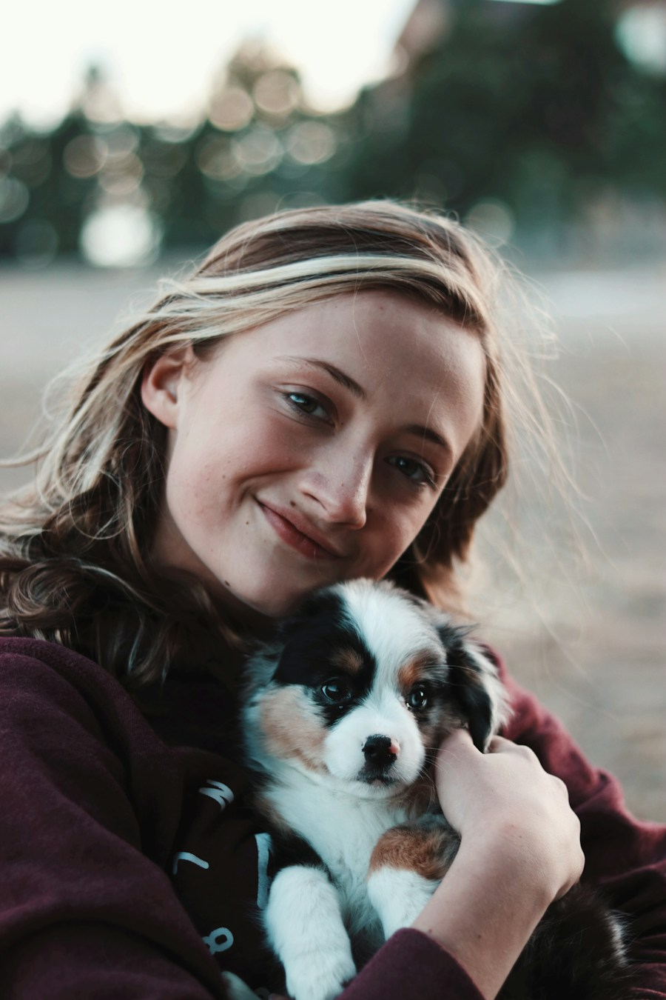

Café exemplo
- Espécie e idade
- Cão, 9 anos, pelagem preta
- Porte
- Médio
- Temperamento
- Calmo, gosta de cochilar ao sol
- Cuidados
- Medicação diária para as articulações
Passo a passo da adoção responsável
Adotar muda duas histórias: a dele e a sua.
O Sem Barreiras Pet aproxima você das ONGs e abrigos e organiza cada etapa para que o processo seja mais simples, seguro e responsável, para você e para o animal. Leia com calma: aqui não existe pressa.

Etapa 1 de 4
Você não precisa decidir tudo agora. Comece contando um pouco sobre você e sua rotina.
Seus dados são usados apenas para viabilizar o processo de adoção e o contato com a ONG.
Etapa 2 de 4
O pet ideal não é apenas aquele que chama atenção na foto. É aquele cuja personalidade, rotina e necessidades podem caminhar junto com a sua.
Dados demonstrativos
Os filtros abaixo ainda não funcionam e os animais são fictícios: nomes e histórias foram inventados e as fotos são ilustrativas. Eles mostram como as informações vão aparecer no catálogo.
Importante: Adoção é um compromisso de longo prazo. Antes de avançar, considere seu tempo, espaço, custos e apoio da família.
Etapa 3 de 4
Conhecer o pet e conversar com a equipe do abrigo ajuda a tornar a decisão mais segura para todos.
Dados demonstrativos
Abrigo fictício, usado apenas para demonstrar a interface. O endereço abaixo não existe.
Mapa indisponível neste ambiente.
O link “Como chegar” aparecerá aqui quando o abrigo tiver um endereço real cadastrado.
Latitude -9.6658, longitude -35.7353 (valores de exemplo).
Etapa 4 de 4
Depois da visita, você acompanha cada fase do seu pedido em um só lugar. A ONG conduz a avaliação com cuidado e no ritmo dela, e isso faz parte de uma adoção responsável.
Exemplo de acompanhamento
Status do pedido
Em análise pela ONG
Atualizado há 2 dias
Próximo passo Dica
A equipe do abrigo pode ligar para uma conversa rápida sobre sua rotina. Enquanto isso, que tal ler as orientações para os primeiros dias do Café em casa?
Retirada no abrigo
Rua Demonstrativa, nº 000 — Bairro Exemplo
Maceió – AL · CEP 00000-000
Se aprovado, leve um documento com foto e comprovante de endereço no dia da retirada.
Importante: Enviar um formulário ou solicitar uma visita não garante a adoção. Cada ONG realiza uma avaliação responsável.
As respostas abaixo são orientações gerais. As regras podem variar conforme a ONG ou o abrigo responsável pelo animal.
Muitas ONGs não cobram pela adoção, mas algumas pedem uma taxa ou contribuição para ajudar com vacinas, vermifugação ou castração. Pergunte ao abrigo antes da visita. Lembre-se também dos custos contínuos, como alimentação, consultas e medicamentos.
Em geral, sim. O mais importante é o pet combinar com o espaço e a sua rotina. Algumas ONGs pedem telas de proteção em janelas e sacadas. Converse com o abrigo para entender o que é esperado.
Normalmente é possível. A ONG pode perguntar sobre o temperamento, as vacinas e a castração do animal que já mora com você, e pode recomendar uma adaptação gradual entre eles.
Depende de cada ONG e da quantidade de pedidos: pode levar de alguns dias a algumas semanas. Se tiver dúvidas sobre o andamento, entre em contato com o abrigo responsável.
Avise o abrigo o quanto antes para liberar o horário e combinar uma nova data. Imprevistos acontecem, e a comunicação clara ajuda a equipe a se organizar. O reagendamento pela plataforma ainda será implementado.
Dê o primeiro passo no seu tempo. A gente acompanha você no caminho.